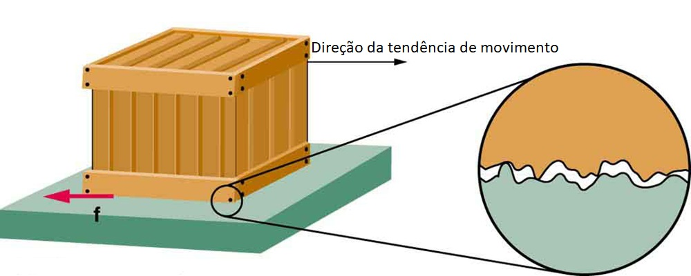
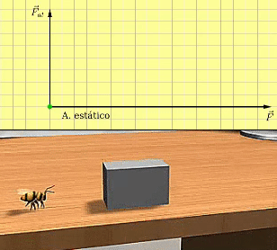
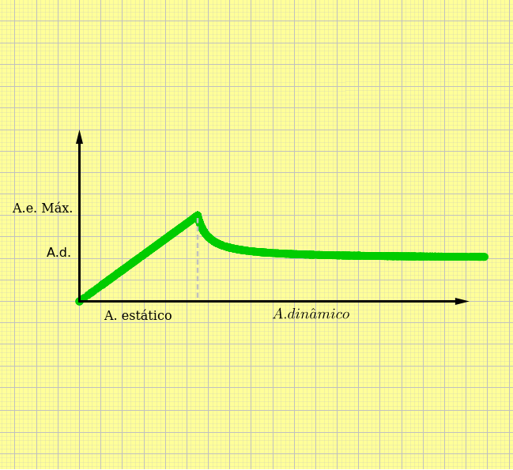

Aula2-16: Força de atrito estático e dinâmico
Atrito entre as superfícies
Quando tentamos fazer duas superfícies deslizarem uma sobre a outra, surge em cada uma delas uma força que se opõe à tendência de movimento. Essa força existe sempre que há tendência ao deslizamento — isto é, sempre que uma força externa aplicada cria a possibilidade de deslizamento. Ela é estudada em dois momentos diferentes do processo:

-
Força de atrito estático: é a força oriunda do contato entre o corpo estudado e a superfície sobre a qual ele está apoiado. Ela aponta sempre na direção oposta à tendência de movimento, funcionando como uma força resistiva ao início do deslizamento. Enquanto o corpo não desliza, seu valor cresce conforme a força externa, até um valor máximo, dado pela fórmula abaixo:
em que μe é o coeficiente de atrito estático
-
Força de atrito dinâmico ou cinético: é a força oriunda do contato entre o corpo estudado e a superfície sobre a qual ele desliza. Ela aponta sempre na direção oposta ao movimento do corpo, funcionando como uma força resistiva ao deslizamento. Diferentemente do atrito estático, durante o movimento seu valor é praticamente constante.
A fórmula que nos fornece essa força está abaixo:
em que μd é o coeficiente de atrito dinâmico
|
 |
 |